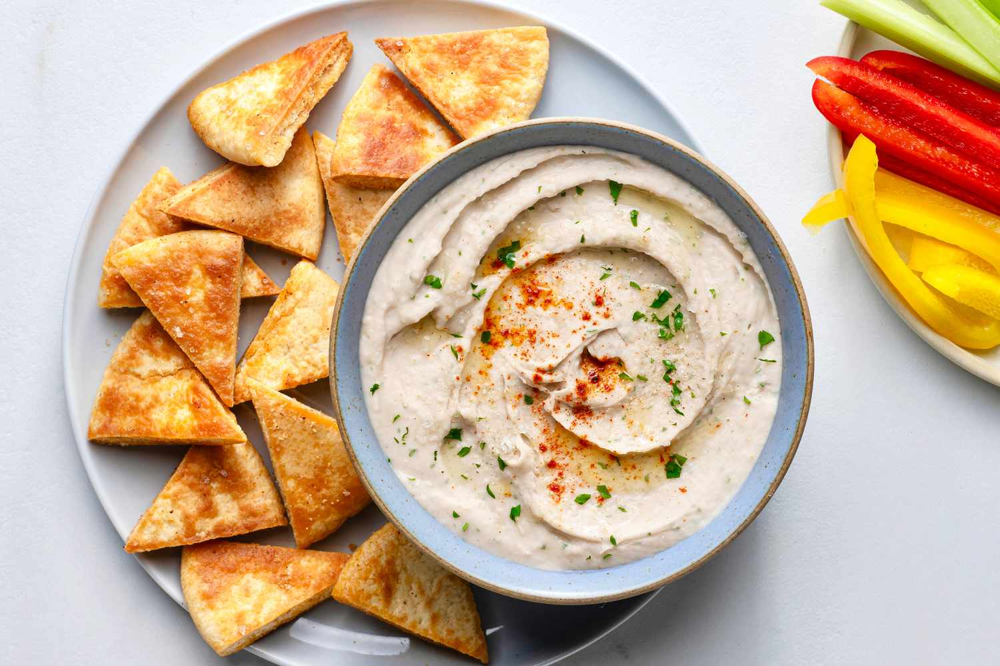

Popular in Middle Eastern cuisine, hummus is a savory spread made from cooked chickpeas. It is usually blended with tahini, lemon juice, garlic, and olive oil. Hummus can be enjoyed with pita bread, crackers, vegetables, or any other snack of your choice!
Ingredients
You will need:
- 1 15 oz can of chickpeas
- 1/4 cup of fresh lemon juice
- 1/4 cup well-stirred tahini
- 1 small garlic clove, minced
- 2 tbps extra virgin olive oil
- 1/2 tps of ground cumin
- 2 tbps of water
- dash of ground sumac
- salt to taste
Steps
- In the bowl of a food processor, combine the tahini and lemon juice and process for 1 minute, scrape the sides and bottom of the bowl then process for 30 seconds more. This extra time helps “whip” or “cream” the tahini, making the hummus smooth and creamy.
- Add the olive oil, minced garlic, sumac, and a 1/2 teaspoon of salt to the whipped tahini and lemon juice. Process for 30 seconds, scrape the sides and bottom of the bowl then process another 30 seconds or until well blended. Open, drain, and rinse the chickpeas. Add half of the chickpeas to the food processor and process for 1 minute. Scrape sides and bottom of the bowl, then add remaining chickpeas and process until thick and quite smooth; 1 to 2 minutes.
- Most likely the hummus will be too thick or still have tiny bits of chickpea. To fix this, with the food processor turned on, slowly add 2 to 3 tablespoons of water until you reach the perfect consistency.
- Taste for salt and adjust as needed. Serve hummus with a drizzle of olive oil and dash of paprika. Store homemade hummus in an airtight container and refrigerate up to one week.